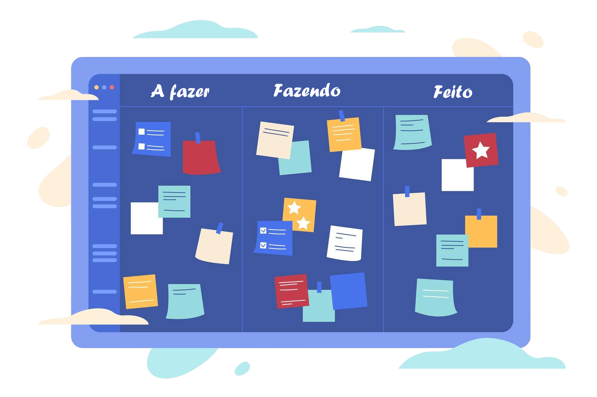

KANBLAN
Transforme sua produtividade com o Kanblan. O Kanblan adota a metodologia Kanban para levar a gestão de tarefas a um novo patamar de eficiência e organização.
Mas afinal, o que é Kanban? É um sistema inteligente de planejamento, acompanhamento e otimização de atividades, ideal para projetos, rotinas pessoais ou fluxos de trabalho corporativos.
Mas afinal, o que é Kanban? É um sistema inteligente de planejamento, acompanhamento e otimização de atividades, ideal para projetos, rotinas pessoais ou fluxos de trabalho corporativos.
Precisa montar uma rotina de estudos? O Kanblan ajuda você a manter o foco. Deseja aprimorar a gestão interna da sua equipe? O Kanblan torna tudo mais claro e ágil. Gerencia projetos de software ou negócios complexos? O Kanblan oferece o controle e a visão que você precisa.
Simples, moderno e poderoso. O Kanblan é mais do que uma ferramenta — é o seu novo parceiro na busca por produtividade e excelência.